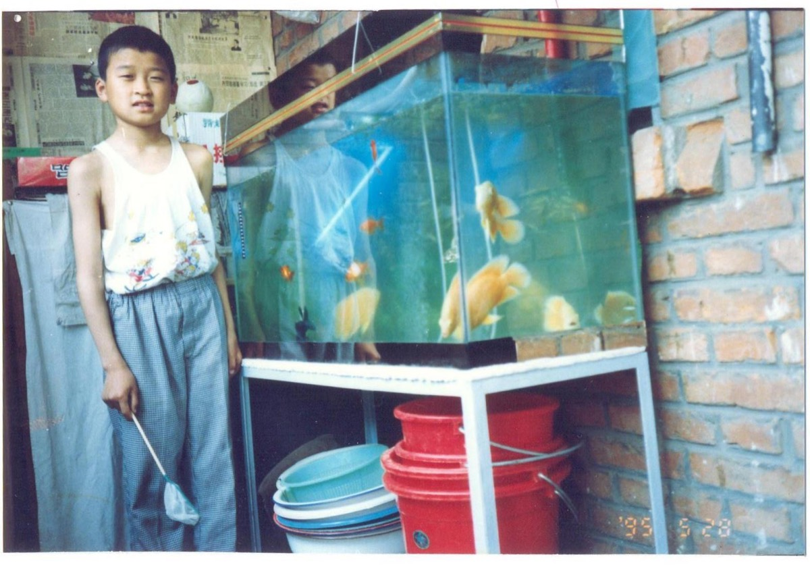
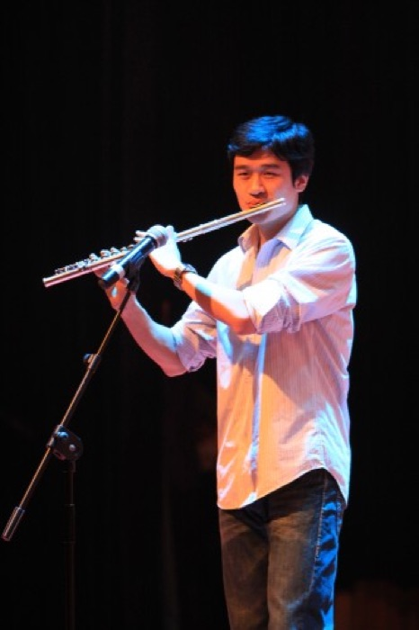

M1 · 课程读本 · 《数字化时代的数字化学习》（作者：段玉佩，书稿 240929 版）M1 · Course reader · Digital Learning in the Digital Age (Yupei Duan, manuscript 240929)
读本：第 02 · 03 · 04 章Reader: Chapters 02 · 03 · 04
怎么读：第 02 章必读（约 25 分钟）；第 03、04 章二选一（第 03 章约 20 分钟，第 04 章约 25 分钟）。读本有中文和英文两个版本，用页眉的 English / 中文 按钮切换；每章开头有一段“本章导读”。读一种语言即可——本周的时间预算按读中文或英文一种计算，不是两种都读。读的时候准备好日志——遇到让你停下来的句子，记下来，它可能就是你短文要引用的概念。
How to read: Ch. 02 is required (~25 min); choose one of Ch. 03 (~20 min) / Ch. 04 (~25 min). The reader is here in both Chinese and English — switch with the English / 中文 button in the header; each chapter opens with a short “at a glance” summary. Read in one language only — the week's time budget counts reading the Chinese or the English, not both. Keep your log handy — a sentence that stops you is probably a concept your essay will cite.
目录Contents: 02 到底什么是学习？02 What is learning, really? · 03 我是怎样从差生变成老师的？03 How I went from the bottom of the class to becoming a teacher · 04 如何“沉迷”学习？04 How to get “hooked” on learning
02 到底什么是学习？02 What is learning, really? 必读 · 约 25 分钟Required · ~25 min
本章从马克·吐温关于“上学”与“受教育”的那句话开始，再数一数孔子和苏格拉底的学生中真正“学成”的有几位——上学并不保证什么。接着给出学习的定义：获取新的理解、知识、行为、技能、价值观、态度和偏好的过程，并强调学习 100% 发生在大脑中（孙悟空学艺的“灵台方寸山，斜月三星洞”是“心”字的谜语）。1900 年法国一幅《一百年后的学校》想象画，是对填鸭式教育的警告。学习应当知行合一（MIT 校训 mens et manus）。把守学习大门的有两个门卫——情绪和动机；“威逼利诱”可以开门，而有失败经历的人应当“移植”自己过去的成功经验。全章以小男孩手中的小鸟的寓言收尾：有了数字化学习，答案就在你自己的手中。
The chapter opens with Mark Twain's line on schooling versus education, then counts how few of Confucius's and Socrates's students “made it” — the point being that attending school guarantees nothing. It defines learning as the process of acquiring new understanding, knowledge, behaviours, skills, values, attitudes and preferences, and insists it happens 100% in the brain (with the Monkey King's mountain as a riddle for “heart/mind”). A 1900 French painting of a “memory-transplant school” warns against spoon-fed education. Learning should unite mind and hand (MIT's mens et manus). Two gatekeepers — emotion and motivation — guard the door; “carrot and stick” can open it, and those with a history of failure should “transplant” a past success. The chapter ends with the parable of the bird in the boy's hands: with digital learning, the answer is in your own hands.
选看 · 读前或读后 6 分钟（微课 1 已用过同一段；看过可跳过）Optional · 6 min before or after reading (same clip as micro-lesson 1; skip if you have seen it)
什么是学习？ · 约 6 分钟 · B 站 UP 主 _愚人金_（Coursera《学会如何学习》中英字幕转载）What is learning? (Learning How to Learn 1.1.4) · ~6 min · Bilibili uploader _愚人金_ (re-upload of Coursera's Learning How to Learn with bilingual captions) · 在 B 站打开 ↗Open on Bilibili ↗
神经科学家 Terrence Sejnowski 讲学习时大脑里发生了什么——对照本章“学习 100% 发生在大脑中”。Neuroscientist Terrence Sejnowski on what happens in the brain when you learn — set it beside this chapter's “all learning is brain learning”.
选看 · 读后 6 分钟Optional · 6 min after reading
不需要羡慕天才 · 约 6 分钟 · B 站 UP 主 _愚人金_（Coursera《学会如何学习》中英字幕转载）No need for genius envy (Learning How to Learn 4.1.4) · ~6 min · Bilibili uploader _愚人金_ (re-upload of Coursera's Learning How to Learn with bilingual captions) · 在 B 站打开 ↗Open on Bilibili ↗
本章作者的结论是“我不是笨，我只是练习不够”。Oakley 从工作记忆的角度说同一件事：记性好的人和记性一般的人各有长处，投入练习的人都能学会。看完想一想：跳绳比赛那晚，作者“记性好”重要，还是“练得够”重要？This chapter ends with “I wasn't stupid, I just hadn't practised enough.” Oakley says the same thing from the angle of working memory: people with big and small working memories each have strengths, and whoever puts in the practice learns. Afterwards ask: on the night before the skipping contest, did a good memory matter — or enough practice?
选看 · 读后 5 + 7 分钟（两段各对应本章的一节）Optional · 5 + 7 min after reading (one clip for each section of the chapter)
是什么激励了你？ · 约 5 分钟 · B 站 UP 主 _愚人金_（Coursera《学会如何学习》中英字幕转载）What motivates you? (Learning How to Learn 2.2.1) · ~5 min · Bilibili uploader _愚人金_ (re-upload of Coursera's Learning How to Learn with bilingual captions) · 在 B 站打开 ↗Open on Bilibili ↗
对应“一、理解多巴胺”：Oakley 讲三种影响学习的脑内化学物质——乙酰胆碱、多巴胺、血清素。多巴胺在她口中管的是“预期奖赏”，和本章“奖赏 → 愉悦 → 重复”是同一个机制。Pairs with section I, “understanding dopamine”: Oakley on three brain chemicals that shape learning — acetylcholine, dopamine, serotonin. Her dopamine is about expected reward, the same mechanism as this chapter's reward → pleasure → repeat.
《刻意练习》作者埃里克森新书《Peak》解读 · 约 7 分钟 · B 站 UP 主 商业纪录片Anders Ericsson's Peak — the book behind “deliberate practice”, explained · ~7 min · Bilibili uploader 商业纪录片 (Business Documentaries) · 在 B 站打开 ↗Open on Bilibili ↗
对应“二、刻意练习——遍敲世界的门”：本章引用的埃里克森和“一万小时”之争，这段七分钟讲清楚了刻意练习和“反复做”的区别。看完对照你自己：你练得多的那件事，是刻意练习还是重复？Pairs with section II, “deliberate practice”: the Ericsson research and the “10,000 hours” debate this chapter cites, in seven minutes — and the difference between deliberate practice and mere repetition. Then ask yourself: the thing you practise most — deliberate practice, or repetition?
有一次，一个记者采访美国的大文豪马克.吐温（Mark Twain）。记者问马克.吐温：听说您只有小学文化，是吗？这个问题提的很是不客气，显然这个学历很高的记者是想通过这个问题讽刺只上过小学的马克.吐温。
A reporter once interviewed the great American writer Mark Twain. The reporter asked: "I hear you only finished primary school — is that right?" It was a rather rude question; this highly educated reporter clearly meant to mock a man who had only been to primary school.
马克.吐温回答记者说：“I have never let my schooling interfere with my education(A Quote by Mark Twain, n.d.).”我从来不会因为上学，而影响我受教育。
Mark Twain answered: "I have never let my schooling interfere with my education" (A Quote by Mark Twain, n.d.). In other words: going to school has never got in the way of my getting an education.
人们希望通过受教育的过程，让自己达成学习好的结果。马克.吐温这句话则提醒我们，“上学”和“受教育”是两码事，不要希望仅仅通过上学这个动作的完成，就自然而然可以实现有教养和有学识的结果。
People hope that by going through the process of being educated they will end up learning well. Mark Twain's line reminds us that "going to school" and "getting an education" are two different things; do not expect that merely completing the act of schooling will, by itself, produce a cultured and learned person.
在全世界各地，有很多的孔庙，大家可能注意到了，孔庙中供奉的牌位上，有名有姓的人并不多，远远少于“孔子弟子三千”中的三千这个数字。他们是孔子三千弟子中“授业通身”的贤能之士，也可以说是孔子的学生中，学业有成的人。这些人有多少呢？数字有两种说法，一种是七十二人，一种是七十七人。咱们就以八十人来算作在孔子那里上学、最后学业有成的人数，再用这个数字和孔子学生的总人数三千做一个比较，就可以知道，通过在孔子这里上学而最终学业有成的概率，大约是2.6%。
There are Confucius temples all over the world, and you may have noticed that the tablets enshrined in them carry only a small number of names — far fewer than Confucius's three thousand disciples. These are the "accomplished worthies" among the three thousand, the students of Confucius who, we might say, succeeded in their studies. How many were there? Two figures are given, 72 and 77. Let us round it up to 80 as the number of people who studied under Confucius and ended up accomplished, and compare that with his total of 3,000 students: the probability of becoming accomplished by studying with Confucius works out at roughly 2.6%.

了解了我国至圣先师的教学效果之后，我们再来比较一下古希腊的先哲，苏格拉底的教学工作做的怎么样。在苏格拉底的教育生涯中，共教导出7位著书立说的知名学者(Döring, 2010)。这位乐于在市场上分享知识，喜欢与人讨论，学生人数肯定也一定是远远超过7位的。
Having seen the teaching results of our own Supreme Sage and Teacher, let us compare how the ancient Greek philosopher Socrates did. Over his teaching career Socrates produced seven well-known scholars who wrote books of their own (Döring, 2010). A man who loved sharing knowledge in the marketplace and debating with anyone must surely have had far more than seven students.
所以，即使一个人有幸去上学的时候，遇到的老师是孔子或是苏格拉底，这个人能成为学业有成的人的比率也低的惊人。其实，在任何时代、任何地区都是一样的，不是每一个去上学的，最后都变成了学习好的人。
So even if a person is lucky enough to go to school and have Confucius or Socrates as a teacher, the odds of becoming an accomplished learner are startlingly low. In truth, it is the same in every age and every place: not everyone who goes to school ends up a good learner.
学习的定义
The definition of learning
当我们知道了不能把成才的希望全部寄托在上学这个动作上之后，我们再来看一看，到底什么是学习？学者对于学习（Learning）的定义描述为：学习是获取新的理解，知识，行为，技术，价值观，态度和偏好的过程。（Learning is the process of acquiring new understanding, knowledge, behaviors, skills, values, attitudes, and preferences）(Psychology : The Science of Mind and Behaviour : Richard Gross : 9781444108316, n.d.)。请问，这个过程发生在哪里？可能发生在社会上，可能发生在学校中，可能发生在课堂上，可能发生在家里……都有可能，概率不一，我们无法确定，但我们可以确定的是，学习一定100%发生在大脑中（All learning is brain learning）。
Now that we know we cannot pin all our hopes for becoming somebody on the act of going to school, let us look at what learning actually is. Scholars describe learning as the process of acquiring new understanding, knowledge, behaviours, skills, values, attitudes and preferences (Gross, Psychology: The Science of Mind and Behaviour, n.d.). Now, where does this process take place? It may happen in society, at school, in a classroom, at home… all are possible, with different probabilities, and we cannot be sure. What we can be sure of is that learning happens 100% in the brain — all learning is brain learning.
明朝的吴承恩在《西游记》中写孙悟空学习本领的地方，叫做“灵台方寸山，斜月三星洞”。这个地方在哪啊？这个地方就是心。吴承恩想说，孙悟空修炼，就是在修心。
In Journey to the West, the Ming-dynasty novel by Wu Cheng'en, the place where the Monkey King learns his skills is called "the Mountain of the Spirit Terrace and the Square Inch, the Cave of the Slanting Moon and Three Stars". Where is that? It is the heart — the character 心 (heart-mind), whose strokes look like a slanting moon and three stars. What Wu Cheng'en is saying is that the Monkey King's training is the training of his mind.
宋朝的张孝祥，过洞庭湖时吟哦着“悠然心会，妙处难与君说。”这两种说法，其实都是将发生在脑中的事情安放在了心里。修心养性也好，心里明白也罢，从生理学的角度观察，这些活动其实都是发生在我们的大脑里的。
Zhang Xiaoxiang of the Song dynasty, crossing Lake Dongting, chanted: "The heart quietly understands; the wonder of it is hard to put into words." Both sayings place in the heart what actually happens in the brain. Whether we speak of "cultivating the heart" or of "knowing it in your heart", from the standpoint of physiology all of these activities take place in our brains.
我们对于世界的认识，我们的童年记忆，我们对问题的思考，我们的喜、怒、哀、思、悲、恐、惊，我们一生的经历，所有的体验，都在大脑之中。一个人只要大脑还可以正常工作，任何器官死亡都有可能通过修复或移植继续活着：肝脏、肾脏，甚至心脏都可以移植，但假如“记忆也随着大脑移植了“那么这个人还是他自己吗？医学上评判一个人的真正死亡，标准就是脑死亡。一个人的学习过程，就是创建自己大脑的过程。一个人受教育的过程，主要就是教育者将人类的文明记忆移植到这个人大脑中的过程。这个过程进行的好，学习效果也就自然不错。
Our understanding of the world, our childhood memories, our thinking about problems, our joy, anger, grief, worry, sorrow, fear and surprise, the experiences of a lifetime — every experience — all of it is in the brain. As long as a person's brain still works, the death of any other organ can be survived by repair or transplant: liver, kidney, even the heart can be transplanted. But if "memory were transplanted along with the brain", would that person still be themselves? In medicine, the criterion for a person's true death is brain death. A person's process of learning is the process of building their own brain. A person's process of being educated is mainly the process by which educators transplant the memory of human civilisation into that person's brain. When this process goes well, learning naturally goes well too.
1900年法国巴黎世界博览会上，展示了一副想象画，名字叫做《一百年后的学校》(A 19th-Century Vision of the Year 2000, n.d.)，描绘了艺术家对于100年之后，也就是2000年时学校的想象。在这幅画中，艺术家通过画笔想象人们已经发明出了记忆移植机器，教师通过记忆移植机器，将书本上的知识直接输入到学生的大脑中，完成知识的移植。画报中描绘的“学习场景”首先让我感到可笑，然后让我觉得可怕。可笑是因为这幅画在今天看来像是一则对洗脑教育的讽刺，可怕在于照单全收式的填鸭教育，在我们现在的学校教育中，仍然随处可见，这种教育对于学习者的危害，不亚于只做单向输入的洗脑。
At the 1900 Paris World's Fair an imaginative painting was shown, called The School a Hundred Years from Now (A 19th-Century Vision of the Year 2000, n.d.), depicting what the artist imagined a school would look like in the year 2000. In the picture, people have invented a memory-transplant machine: the teacher feeds the knowledge in books straight into the students' brains, and the transplant of knowledge is complete. The "learning scene" in that picture first made me laugh, then made me shudder. The laugh came from how much the picture looks, today, like a satire of brainwashing education; the shudder came from the fact that swallow-it-whole, force-fed teaching is still everywhere in our schools today, and the harm it does to learners is no less than that of one-way brainwashing.

我们应该怎样学习？
How should we learn?
麻省理工学院（MIT）的校徽(Mind and Hand | MIT Admissions, n.d.)上面有两个拉丁文mens et manus翻译为英文是mind and hand，中文直译为“心智和手”，再雅致一些可以翻译为：“知行合一”。
The seal of the Massachusetts Institute of Technology (MIT) (Mind and Hand | MIT Admissions, n.d.) carries two Latin words, mens et manus — in English, "mind and hand"; in Chinese, literally 心智和手, or more elegantly 知行合一, the unity of knowing and doing.
我们的学习——这个发生在我们大脑中的活动在进行的时候——应该追求知行合一：从大脑出发阅读、聆听、观察，然后经过思考、实践，再回到大脑，储存其中，形成我们的人生经验和阅历。当遇到新的问题的时候，知行合一地去解决，而后，原来储存在我们大脑中的经验和阅历，还可能被调整，修改，甚至完全改写。
Our learning — this activity that goes on in our brains — should pursue the unity of knowing and doing: start from the brain to read, listen and observe; then think and practise; then return to the brain, where it is stored as our life experience. When a new problem comes along, solve it by uniting knowing and doing — and afterwards the experience already stored in our brains may be adjusted, revised, even completely rewritten.
想要开启主动的学习之旅，并非简单之事，把守学习大门的，有两个门卫，一个叫情绪，一个叫动机。情绪不对，动机不足，学习就会心不在焉。情绪高涨，动机充足，学习就可能心无旁骛。我们无法叫醒一个装睡的人，也无法教会一个装作学习的人。有太多的人，身体坐在教室里，但大脑却一直徘徊在情绪和动机这两个门卫把守的学习大门之外。你看看有多少学生背着书包去上学？这里面又有多少人是在真正地学习呢？
Setting out on a journey of active learning is no simple matter. Two gatekeepers guard the door of learning: one is called emotion, the other motivation. When the emotion is wrong and the motivation weak, learning is absent-minded. When emotion runs high and motivation is strong, learning can be single-minded. You cannot wake someone who is pretending to sleep, and you cannot teach someone who is pretending to learn. Far too many people sit in the classroom in body while their brains linger outside the door of learning, kept out by those two gatekeepers, emotion and motivation. Look at how many students walk to school with their schoolbags — and how many of them are really learning?
想要迈进学习之门，通过情绪和动机的防守，也没那么难。有两种策略供你选用。一种是“利诱”，一种是“威逼”，注意啊，这里的威逼，和利诱都是加引号的。中国人说：书中自有黄金屋，书中自有颜如玉。西方人说：学习（读书）足以怡情，足以博彩，足以长才（Studies serve for delight, for ornament and for ability.）。这是利诱。不会学习的人，没有未来的——这是威逼。
Getting through that door, past the guard of emotion and motivation, is not so hard either. Two strategies are on offer: the "carrot" and the "stick" — note that both the carrot and the stick here are in quotation marks. The Chinese say: "In books there are houses of gold; in books there are faces like jade." Westerners say: "Studies serve for delight, for ornament and for ability." That is the carrot. "Those who cannot learn have no future" — that is the stick.
威逼也好，利诱也罢，目的都是要让学习者真正开启学习状态。
Stick or carrot, the purpose is the same: to get the learner truly into a state of learning.
也有很多人的学习障碍，是威逼利诱的不得法，才导致了久久寻门而不入的窘境。还有一些不喜欢学习的人，是由于之前很多次的失败，或者不快乐的学习经历，让他的大脑中产生了对学习是不快乐的印象，甚至恶化成了习得性无助，这可怎么办呢？对于这类情况，我的建议是，移植你的成功经验。而最关键的地方，还是在于你自己。有一个寓言故事，从前有一个博学的聪明人，可以给所有提问的人以满意的答案，聪明人周游世界，从一个村庄到另一个村庄，为有疑难问题的人们排忧解难。有一个村子里，有个自以为很聪明的小男孩，他很想通过给聪明人提出一个他回答不上来的难题而羞辱他，让全天下的人都知道，聪明人也有回答不了的问题。他想啊想啊，终于，想到了一个绝佳的问题。他抓了一只小鸟，把小鸟握在手中，从外面看不到小鸟是死是活，他的计划是，在众目睽睽之下，把握住小鸟的拳头举起，问聪明人自己手里的小鸟是死的，还是活的。如果聪明人回答是死的，他就放开双手，让小鸟飞走；如果聪明人回答是活的，他就悄悄用力，把小鸟掐死，然后将死掉的小鸟展示给大家看，这样，无论聪明人怎样回答，小男孩都可以证明他回答的是错的。主意打定，小男孩就手握着小鸟在聪明人又在大家面前为人们回答问题的时候提出了自己的问题，得意洋洋的他却没有想到，聪明人给了他一个完美的答案，聪明人是怎么回答小男孩的呢？聪明人说：小鸟是死是活，都取决你的双手，我的朋友。
Many people's trouble with learning is simply that the carrot and stick were applied badly, leaving them searching for the door for a long time without finding it. Others dislike learning because many earlier failures or unhappy learning experiences have left an impression in their brains that learning is unpleasant — sometimes deteriorating into learned helplessness. What then? For such cases my advice is: transplant your own successful experience. And the crucial part still lies with you. There is a fable. Once there was a learned, clever man who could give a satisfying answer to anyone who asked, and who travelled the world from village to village, solving people's hard problems. In one village a boy who thought himself very clever wanted to humiliate the wise man by asking a question he could not answer, so that the whole world would know that even the wise man had questions he could not answer. He thought and thought, and at last hit on a perfect one. He caught a small bird and held it in his hands so that nobody could tell from outside whether it was alive or dead. His plan was to raise his closed fist in front of everyone and ask whether the bird in his hand was dead or alive. If the wise man said dead, he would open his hands and let the bird fly away; if the wise man said alive, he would quietly squeeze, kill the bird, and show the dead bird to everyone. Whatever the wise man answered, the boy could prove him wrong. With his mind made up, the boy, bird in hand, put his question while the wise man was once again answering questions before the crowd. Pleased with himself, he never expected that the wise man would give him a perfect answer. What did the wise man say? He said: "Whether the bird is dead or alive depends on your hands, my friend."
故事讲完了，你明白了什么道理吗？数字化学习的出现，让学习变得更简单了，也变得更难了。对于想学习的人来说，数字化学习可以让他们如虎添翼；对于不想学习的人来说，数字化学习可能会令他们与别人的差距拉得更大。而最终这个属于你的答案，只取决于你的双手。
The story is over — do you see what it means? The arrival of digital learning has made learning both easier and harder. For those who want to learn, digital learning is wings on a tiger; for those who do not, digital learning may widen the gap between them and everyone else. And in the end the answer that belongs to you depends on your hands alone.
03 我是怎样从差生变成老师的？03 How I went from the bottom of the class to becoming a teacher 选读 · 约 20 分钟Choose one · ~20 min
一个亲身故事。五年级转入城市小学后，作者坐在最后一排，因为“Be 动词”被哄堂大笑，还被起了外号“乡巴佬”。转机是一次跳绳比赛：他观察六年级同学，小步尝试，休息再试，第二天就拿到年级第三。同样的循环——被认可 → 想做 → 练习 → 进步——又把他在两个月内从长笛初级班带进了高级班。他得出结论：自己从来不笨，只是练习不够；并把这一点和一万小时定律、卖油翁的“惟手熟尔”、以及既指本事又指时间的“功夫”一词联系起来。学习像物理中的“功”一样，只朝一个方向累积。
A personal story. After transferring to a city school in grade 5, the author sits in the back row, is laughed at over “be-verbs”, and is nicknamed “country bumpkin”. The turnaround is a skipping-rope contest: he watches older students, tries in small steps, rests and retries, and by the next day places third in the grade. The same loop — recognition → desire → practice → improvement — carries him from the flute beginners' class to the advanced class in two months. He concludes he was never stupid, only under-practised, and links this to the 10,000-hour idea, the oil-seller's “nothing but practice”, and the Chinese word gongfu, which means both skill and time. Learning, like physical “work”, accumulates in one direction.
我小学6年转过2次学，上过三个不同的小学。在我5年级的时候，父母将我从原来就读的一所农村小学，转入了一所城市小学。校园和教室变得现代化了，同学的人数变多了，科目学习变难了，我好像进了大观园的刘姥姥，看到什么都觉得新鲜。从来没有正经上过英语课的我，面对着新学校的专业英语教师的英语语法讲授，根本就像是在听天书。
In six years of primary school I changed schools twice and attended three different ones. In grade 5 my parents moved me from the village primary school I had been attending to a city primary school. The campus and classrooms were modern, there were more classmates, the subjects were harder, and I was like Grandma Liu entering the Grand View Garden (the country visitor in Dream of the Red Chamber) — everything looked new to me. Having never had a proper English lesson, I sat through the new school's specialist English teacher explaining grammar as if listening to a book from heaven.
有一节课，老师在讲Be动词，我就在自己的笔记本上写下了笔记必动词。碰巧被老师看到，她就暂停了讲课，在黑板上写了一个大大的“必”字，这个必啊，是中文的必须的必，然后告诉全班同学说，我们班有同学写be动词是这样写的，同学们哄堂大笑。我顿时无地自容。
In one lesson the teacher was explaining the "be" verbs, and in my notebook I wrote 必动词 — "bì verbs", using the Chinese character bì that sounds like "be". The teacher happened to see it. She stopped the lesson, wrote a huge 必 on the blackboard — that's the bì of bìxū, "must" — and told the whole class that one of us wrote "be verbs" like this. The class roared with laughter. I wanted the ground to swallow me.
在数学课上，老师根据测试分数进行班级座位排序。成绩最高的同学排在最中央的最前排，成绩越差就坐的越靠后，越靠边。几次考试之后，我的座位被排到了全班最靠墙的倒数第二个，连黑板上的字看起来都费劲。要知道，那时候的我的身高，在全班男生中是第2矮的。
In maths, the teacher arranged our seats by test score. The highest scorer sat front and centre; the lower your score, the further back and further to the side you sat. After a few tests my seat was the second-to-last by the wall, where I could barely make out the writing on the blackboard. Bear in mind that I was the second-shortest boy in the class at the time.
学习成绩的落后，让我特别畏惧去学校上学，更畏惧考试后的家长会。有一次我妈妈参加完我的家长会后，就跟我爸说，以后段玉佩的家长会我都不去了，太丢人了，全班学习最差的几个学生在家长会之后被留下来挨着个批评，我受不了了。我听到这话难过极了，但也不知道怎样才能学的更好。当时班里几个学习好又淘气的男生还给我起了外号，叫“乡巴佬”。因为我穿着老旧，举止粗笨，学习成绩还特别差。我当时一度怀疑自己是不是真的智商有问题。
Falling behind made me dread going to school, and dread the parent–teacher meetings after each test even more. Once, after one of those meetings, my mother told my father: "I'm not going to any more of Yupei's parent meetings. It's too humiliating. The parents of the few worst students are kept behind afterwards and criticised one by one. I can't take it." Hearing that hurt terribly, but I had no idea how to learn better. A few of the bright but naughty boys in the class gave me a nickname, "country bumpkin", because my clothes were shabby, my manners clumsy, and my marks dreadful. For a while I genuinely wondered whether something was wrong with my intelligence.

你可能想象不到，我的学习转机呢，发生在一次跳绳比赛中。跳绳比赛以班级为单位计分，每个班选出参加单摇、编花、双摇等各个跳绳项目的选手，每个项目获胜的选手可以为本班加分。我们班的男生中，没有会跳双摇的，这个项目眼瞅着就要记零分了。作为5年级1班的一员，我非常希望自己的班级能在年级跳绳比赛中获得好成绩，但我自己也不会跳双摇。当天下午，6年级同学先比赛，我就等在操场上，看6年级跳双摇比赛的选手们是怎么跳的。通过观察，我发现，相对单摇来说，双摇需要跳的再高一些，手摇的再快一点。我就试着练了几下，很快，就可以跳出1个2个了，但是不能连续跳，没关系，休息一下再来。这次，成功跳了3个4个，而且，已经可以连续跳2个了。休息一下再来。就这样，只用了一个晚上，我就已经可以连续跳很多个双摇了。第二天，我报名了男子双摇比赛。居然在比赛中获得了年级第三名的好成绩。班主任和同学们都纷纷向我表述祝贺，也同时感谢我为班集体多争取到了分数。我因为自己终于可以给班集体做贡献了，而感觉到特别强烈的成就感。
You would never guess: my turning point came in a skipping-rope contest. The contest was scored by class; each class chose competitors for the single jump, the crossover, the double-under and the other events, and the winner of each event earned points for their class. No boy in our class could do double-unders, and the event was about to score zero. As a member of Class 1, Grade 5, I badly wanted our class to do well in the grade contest, but I couldn't do double-unders either. That afternoon the grade 6 competitions went first, so I waited on the playground and watched how the grade 6 double-under competitors jumped. From watching, I found that compared with the single jump you need to jump a bit higher and turn the rope a bit faster. I tried a few, and soon I could do one or two — not in a row, but never mind, rest and try again. This time three or four, and already two in a row. Rest and try again. In a single evening I could do many double-unders in a row. The next day I entered the boys' double-under event — and, to my astonishment, came third in the whole grade. The class teacher and my classmates crowded round to congratulate me and to thank me for winning extra points for the class. Because at last I had contributed something to the class, I felt an extraordinarily strong sense of achievement.
这个转机在我学习长笛演奏时，得到了发展。因为我的新小学是北京市金帆艺术校，学生们有机会学习西洋乐器演奏，我也凑着热闹，跟着大家一起学习。我最终选择的乐器是长笛，我的很多同学都已经学习器乐很多年了，但我因为是初学者，所以被分到和2年级，3年级的小同学一起学习的初级班，我是年龄最大的初学者。每次上课的时候，老师让每位同学依次吹一下上次学习的曲目，因为年龄大，手臂长，气息足，我几周之后就成为了班中吹的最好的学生，老师每次都会让我做示范，夸我吹的好。现在看来，我在一群小朋友中吹到最好是必然的，很多2年级的小同学连长笛的键盘都还按不全呢，怎么可能吹的好呢？当时的我觉得，吹长笛是我最快乐的学习过程，放学回到家之后，我也乐此不疲地练习，以便在下次上课时，再成为全班的表率。2个月后，我就从初级班进入到已经训练了2年的高级班了。那个高级班里，大都是5年级6年级学生，其中也包括我的同伴同学，有的人看我拿着长笛进了高级班，还在取笑我说，“嘿，乡巴佬来咱们班啦。”我当时还真有点胆怯。但是，看了看手中的长笛，顿时觉得自信十足，因为我清楚地知道自己有多么刻苦的练习。果然，当我在高级班中逐渐地也成为了吹的最好的那个人之后，同学们也就没人再叫我乡巴佬了。现在想一想，当时我在短时间内能将长笛吹得很好，道理其实很简单。我因为在吹奏长笛上获得了认可，所以愿意投入更多的时间和精力进行练习，这样的练习会让我的长笛吹得更好，而后获得更多的认可和赞赏，因为吹的好，所以有兴趣做，因为有兴趣做，所以练习的更多，因为练的更多，所以吹的更好……如此往复，良性循环。
That turning point developed further when I learned the flute. My new primary school was one of Beijing's "Golden Sail" arts schools, so pupils had the chance to learn Western instruments, and I joined in with everyone else. The instrument I finally chose was the flute. Many of my classmates had been learning instruments for years, but as a beginner I was placed in the beginners' class with the grade 2 and 3 children — the oldest beginner there. In every lesson the teacher had each pupil play the piece from the previous lesson. Being older, with longer arms and more breath, I became the best player in the class within a few weeks; the teacher had me demonstrate every time and praised my playing. Looking back, of course I was the best in a group of small children — many of the grade 2 pupils couldn't even cover all the keys, so how could they play well? But at the time, playing the flute felt like the happiest learning I had ever done. Back home after school I practised tirelessly so that next lesson I could be the class model again. Two months later I moved from the beginners' class into the advanced class, which had been training for two years. That class was mostly grade 5 and 6 pupils, including my own classmates, and some of them, seeing me walk in with a flute, sneered: "Hey, the country bumpkin's joined our class." I really was a little scared. But then I looked at the flute in my hands and felt full of confidence, because I knew exactly how hard I had practised. Sure enough, once I had gradually become the best player in the advanced class too, nobody called me country bumpkin any more. Thinking about it now, the reason I could play the flute well in such a short time was simple. Because I was recognised for my flute-playing, I was willing to put in more time and effort to practise; that practice made me play better, which brought more recognition and praise. Because I played well, I was interested; because I was interested, I practised more; because I practised more, I played better… round and round: a virtuous cycle.

跳绳上及长笛演奏上的成功，让我重新认识了自己。我并不是白痴，在学习上的暂时落后，是我的积累不够，练习不足导致的。我在5年级之前，很少把精力和时间用在学习上，所以自然就与那些一直认真学习的新同学们产生了明显的学习差距。
Those successes in skipping and on the flute made me see myself anew. I was not an idiot. Falling behind in my studies was temporary, caused by too little accumulation and too little practice. Before grade 5 I had rarely put my energy and time into study, so naturally there was an obvious gap between me and new classmates who had always studied seriously.
格拉德威尔在他的书《异类》中，描述了1万小时定律。这和欧阳修的《卖油翁》中所描述的道理是一致的：我亦无他，惟手熟尔——熟能生巧，Practice makes perfect. 对于学习，通过了情绪和动机的关卡，后面的秘诀就是持续练习了。
In his book Outliers, Malcolm Gladwell describes the 10,000-hour rule. It is the same truth told in Ouyang Xiu's The Oil Seller (a Song-dynasty parable of practice): "I have no secret; my hand is simply practised" — practice makes perfect. For learning, once you have passed the checkpoints of emotion and motivation, the remaining secret is sustained practice.
张大春在他的书《见字如来》中有一篇文章，他回忆他和木匠师傅杨兆堂进行学习的故事，杨师傅知道他是读书人之后，说他是学不好木匠活儿的，张大春问其原因，杨师傅说把书读好和把木匠活做好，本身都是需要花费很多的功夫的。张大春感慨地写到：时间是一种巨大的力，它只有一个运动的方向，不可逆转；而欲造就事功，非得累积这无与伦比的巨力不可；而且，在一段漫长的时间里，若要成其功，还分不得神。中文中的功夫是个挺精妙的词，它既代表本事，又代表时间。你想做好学习这件事，不花时间，不花功夫，是做不来的。
In his book 见字如来 (Seeing the Characters, Meeting the Past), Zhang Dachun recalls learning from the carpenter Master Yang Zhaotang. When Master Yang learned that Zhang was a scholar, he said Zhang would never learn carpentry well. Asked why, Master Yang said that studying well and doing carpentry well both take a great deal of gongfu. Zhang Dachun wrote with feeling: time is an enormous force; it moves in one direction only and cannot be reversed; to accomplish anything one must accumulate this incomparable force; and over a long stretch of time, if one is to succeed, one must not let one's attention wander. The Chinese word gongfu (功夫) is a subtle one: it means both skill and time. If you want to do this thing called learning well, it cannot be done without spending time — without spending gongfu.
物理学中有一个概念，叫做“功”，英文对应的单词是"work"。在物理学中，功表示力对位移的累积的物理量。我们每一次有意义的努力，就是在做功，就是在完成工作，就是在积累朝向某一个方向的位移，虽然有的时候，这个位移特别小，你看不到，别人看不出来，但没关系，只要你做到了，就切切实实地产生或多或少的功，日积月累之后，这个积累的功夫就不容小觑了。这个时候，你的学习功夫就相当了得了。我就是认识到了功到自然成的道理，一步一个脚印，从小学的差生，逐渐成长为一名教师的。
Physics has a concept called "work" (功 in Chinese — the same character as in gongfu). In physics, work is the quantity that accumulates force over displacement. Every meaningful effort we make is doing work — completing work, accumulating displacement in one direction. Sometimes that displacement is so tiny you cannot see it and nobody else can either; it doesn't matter. As long as you actually did it, some amount of work was really produced, and after days and months of accumulation that accumulated gongfu is not to be underestimated. By then your learning gongfu is quite something. It was by understanding that "when the gongfu is there, success comes of itself" that I grew, one footprint at a time, from a primary-school failure into a teacher.
04 如何“沉迷”学习？04 How to get “hooked” on learning 选读 · 约 25 分钟Choose one · ~25 min
学习者能不能“沉迷”学习？本章先把这个愿望（主动学习）与世界卫生组织定义的临床成瘾区分开，然后提出三种态度：不投机取巧、“慢慢来比较快”、从知道到做到。机制在多巴胺：奖赏 → 愉悦 → 重复。一个长笛课的例子区分了外部动机（为表扬而练）和内部动机（因为吹得好而高兴）。奖赏从三个方面塑造学习；教育者应提供适恰的外部奖赏，同时培养内部动机。由于激发动机的因素因人而异，要“遍敲世界的门”：周恩来、达尔文、鲁迅、林肯、亚当·斯密、王小波、陆游。最后列出七种动机因素——挑战、好奇、掌控、幻想、竞争、合作、认可——而线上学习可以缩短寻找令你沉迷的领域的路程。
Can a learner become “addicted” to learning? The chapter first separates the wish (self-driven learning) from clinical addiction as defined by the WHO, then sets three attitudes: no shortcuts, “slow is fast”, and knowing → doing. The mechanism is dopamine: reward → pleasure → repeat. A flute-lesson example distinguishes external motivation (practising for praise) from internal motivation (practising because playing well feels good). Rewards shape learning in three ways; educators should offer fitting external rewards while cultivating internal ones. Since motivators differ by person, “knock on every door of the world”: Zhou Enlai, Darwin, Lu Xun, Lincoln, Adam Smith, Wang Xiaobo, Lu You. Seven motivators are listed — challenge, curiosity, control, fantasy, competition, cooperation, recognition — and online learning can shorten the search for the field that hooks you.
作为家长，我们渴望孩子在学习上不用扬鞭自奋蹄，作为教师，我们希望自己的学生能主动学习，唯恐落后。沉迷学习，就是一个人可以主动学习，别人不让学还不高兴。真的有什么方法，可以让一个孩子开启主动学习，进而沉迷学习吗？
As parents, we long for children who spur themselves on without the whip; as teachers, we hope our students will learn on their own initiative, afraid only of falling behind. To be "hooked" on learning means a person learns of their own accord — and is unhappy when told to stop. Is there really a method that can start a child learning actively, and then get them hooked?
我们先来看一看，什么是沉迷。“沉迷”，表示深深地迷惑或者迷恋。类似于成瘾，不是一个褒义词。
First let us look at what "hooked" (沉迷, chenmi) means. It means to be deeply lost in, or infatuated with, something. It is close to addiction, and not a word of praise.
如果我们翻开世界卫生组织的第十一版国际疾病分类手册，会在第六大类，“心理、行为或神经发育疾病”中，找到两类成瘾导致的疾病，包含由于成瘾物质使用或成瘾行为导致的疾病。比如：
If we open the eleventh edition of the World Health Organization's International Classification of Diseases, we find in the sixth chapter, "mental, behavioural or neurodevelopmental disorders", two groups of disorders caused by addiction: those due to substance use, and those due to addictive behaviours. For example:
物质成瘾：尼古丁、酒精、大麻、阿片类、镇定剂、安眠药、抗焦虑药、可卡因、兴奋剂、致幻剂。
Substance addictions: nicotine, alcohol, cannabis, opioids, sedatives, hypnotics, anxiolytics, cocaine, stimulants, hallucinogens.
非物质成瘾：赌博、游戏、社交媒体。
Non-substance addictions: gambling, gaming, social media.
手册中对这一类障碍的描述为：由于使用包括药物在内的精神活性物质或特定的重复性奖励和强化行为而导致的精神和行为障碍。
The manual describes this class of disorders as mental and behavioural disorders that develop as a result of the use of psychoactive substances, including medications, or of specific repetitive rewarding and reinforcing behaviours.
简单来说，就是对某种物质或行为上瘾，是一种慢性的，而且容易复发的大脑疾病，其特征是成瘾物质的强迫性摄取，行为失控，以及在被剥夺或接触成瘾物质相关线索时强烈的、无法抑制的摄入欲望（渴求），尽管这种摄取行为会带来严重的负面后果。我们现在说的“沉迷”学习，和上面的成瘾肯定不是一回事，而是我们对于培养学习者主动学习动机的一个美好的愿望。
Put simply, addiction to a substance or behaviour is a chronic, relapsing brain disease, characterised by compulsive intake of the addictive substance, loss of behavioural control, and an intense, uncontrollable urge to consume (craving) when deprived of the substance or exposed to cues linked to it — despite the serious negative consequences of that consumption. The "hooked on learning" we are talking about is certainly not the addiction described above; it is our fond wish for cultivating a learner's motivation to learn actively.
无论什么东西，当一个人对其进行病态的迷恋，极端地追求，疯狂的获取时，其整体结果往往很难是良性的，或者很难长时间保持良性结果。各位朋友，我们一定要对学习形成如下的意识：
Whatever the object, when a person becomes pathologically infatuated with it, pursues it to extremes and grabs at it frantically, the overall result is rarely healthy, or rarely stays healthy for long. Friends, we must form the following awareness about learning:
针对学习效果的改善，我们首先要放弃投机取巧的心态。没有什么灵丹妙药，可以让学习者从不想学习，到对学习突然上瘾。也没有什么讲座分享，可以短时间内让人脱胎换骨，重新做人。
To improve learning, we must first give up the hope of a shortcut. There is no magic pill that turns a learner who doesn't want to learn into one suddenly addicted to learning. Nor is there any lecture or sharing session that can make someone a new person in a short time.
进而，我们要培养自己“慢慢来比较快”，以及“正途才是捷径”的耐心和信心。
Next, we must cultivate the patience and confidence that "slow is faster" and "the proper road is the shortcut".
最后，我们要学以致用，不能仅仅是听一听这个专辑的内容，觉得有道理，高兴一下就过去了，而是应该行动起来，按照道理去做——从知道到做到，这样才有可能出现最终我们想要的，学习效果改善的结果，也有望成为喜欢学习、热爱学习、甚至是沉迷学习的人。
Finally, we must apply what we learn. It is not enough to listen to this series, think it makes sense, feel pleased, and move on. We should act and do as the reasoning says — go from knowing to doing. Only then is the result we want, better learning, possible, and only then can we hope to become people who like learning, love learning, even get hooked on learning.
有了以上的意识，我就可以放心地给出各位如何沉迷学习这个问题的答案了：那就是通过科学地认知，刻意地练习，长期地实践，最终学习者可以达成主动学习，沉迷学习。
With that awareness in place, I can safely give you my answer to how to get hooked on learning: through scientific understanding, deliberate practice and long-term action, a learner can finally reach active learning — and get hooked.
一、科学的认知——理解多巴胺
I. Scientific understanding — understanding dopamine
想要沉迷学习，对学习上瘾，我们可以先来看看成瘾是怎么回事。人为什么会对某些物质，某些行为上瘾呢？问题出在我们的大脑里。我们在因为做一些事情得到奖赏的时候，大脑会释放一种叫做多巴胺的物质——这是一种神经递质，会让我们产生愉悦的感觉。比如，我长笛吹的好，得到了老师的表扬，脑子中释放的多巴胺会让我很快乐，下次上长笛课的时候，我就还想取得好成绩，再被老师表扬，这样我就在上课前拼命练习。如此循环往复，良性循环，学的越好越想学，越想学就学的越好。
To get hooked on learning — addicted to learning — let us first look at how addiction works. Why do people become addicted to certain substances or behaviours? The problem lies in our brains. When we are rewarded for doing something, the brain releases a substance called dopamine — a neurotransmitter that produces a feeling of pleasure. For example: I play the flute well and the teacher praises me; the dopamine released in my brain makes me happy; next flute lesson I want to do well again and be praised again, so I practise like mad before class. Round and round it goes, a virtuous cycle: the better I learn, the more I want to learn; the more I want to learn, the better I learn.
成瘾物质或行为让人欲罢不能，最后给个人生活、社会环境带来负面影响，其本质原因也和这种快乐物质多巴胺有关。只不过，与学习取得好成绩得到奖赏时，我们脑中释放的多巴胺的量不一样——成瘾物质导致大脑中短时间内释放的多巴胺过多，一旦停止了摄入这种物质，大脑就极度渴求，只有继续摄入才能正常工作。沉迷社交媒体或网络游戏这种成瘾行为，难以戒除的本质也是多巴胺的不正常释放。
Addictive substances and behaviours — which people cannot stop, and which end up harming their lives and their surroundings — work through the same pleasure chemical, dopamine. The difference is in the amount released compared with being rewarded for learning well: addictive substances make the brain release far too much dopamine in a short time, and once the substance stops, the brain craves it desperately and can only function normally if intake continues. The reason addiction to social media or online games is so hard to break is likewise the abnormal release of dopamine.
还是刚才那个我吹长笛好，得到了奖赏的例子。如果再上长笛课时，我又吹的不错，而老师没有表扬我，这时的我可能会有两种不同的表现。
Back to my example of playing the flute well and being rewarded. Suppose that at the next flute lesson I again play well, but the teacher does not praise me. I might react in one of two ways.
第一种是：因为使得我脑子中多巴胺分泌的是老师的表扬，老师没有表扬我，多巴胺不够，我感到不快乐，就不再练习了。我们称之为外部动机。
The first: what triggered the dopamine in my brain was the teacher's praise. No praise, not enough dopamine, I feel unhappy, and I stop practising. We call this external motivation.
第二种是：即使老师没有表扬我，我也会因为自己吹的不错而自我感觉良好——实际上，这是一种自我奖赏，自我夸奖，这依然可以让我的大脑产生多巴胺，使得我继续努力学习和练习长笛。我们称之为内部动机。
The second: even without the teacher's praise, I feel good about myself because I played well. This is in fact self-reward, self-praise, and it can still make my brain produce dopamine, so I keep working and practising the flute. We call this internal motivation.
很明显，做同样一件事时，拥有内部动机的人会比仅拥有外部动机的人 有更好的表现。这也提醒我们，虽然有的时候，我们看的一群学生的成绩都挺好的，但有的可能属于只在乎外在动机的人，而另一部分学生，则属于后者，驱动他们优秀的是内在动机。
Obviously, doing the same thing, a person with internal motivation will perform better than one with only external motivation. This also reminds us that although we sometimes see a group of students all doing well, some of them may care only about external motivation, while the others are driven to excellence by internal motivation.
外部动机是指个体参加一项活动或任务的目的是为了得到任务本身之外的某些结果，如奖赏等。奖赏泛指个体需要投入精力、时间和努力来试图获取的任何事物或目标。奖赏的表现形式多种多样，其中一个重要的奖赏分类是根据奖赏的抽象程度把奖赏分为初级奖赏和次级奖赏。初级奖赏是指和个体生存息息相关的那些奖赏，比如食物奖赏；而次级奖赏是指个体在社会化过程中习得的，比如金钱和社会赞许。
External motivation means that the purpose of taking part in an activity or task is to gain some result outside the task itself, such as a reward. A reward, broadly, is anything or any goal that a person invests energy, time and effort to try to obtain. Rewards take many forms; one important classification, by degree of abstraction, divides them into primary and secondary rewards. Primary rewards are closely tied to survival, such as food; secondary rewards are learned in the course of socialisation, such as money and social approval.
以往大量的研究表明，奖赏对个体行为有着十分重要的影响。其影响主要表现为三个方面：一是奖赏可以影响刺激以及刺激引起的个体行为反应的联结强度，进而影响个体的学习行为；二是奖赏通过增加个体进行某种行为的频率来促进个体目标的达成；三是奖赏可以诱发个体的主观愉悦度，进而促进个体习得某种特定行为。以上三方面的影响可归结为奖赏具有促进学习、诱发动机行为和产生主观积极愉悦度的三个行为功能。
A large body of earlier research shows that rewards have a very important influence on behaviour, in three main ways. First, rewards can affect the strength of the link between a stimulus and the behavioural response it elicits, and so affect learning behaviour. Second, rewards promote the achievement of goals by increasing the frequency of a behaviour. Third, rewards can induce subjective pleasure, and so help a person acquire a particular behaviour. Together, these amount to three behavioural functions of reward: promoting learning, inducing motivated behaviour, and producing positive subjective pleasure.
我们很难具体评测纯粹的内在动机和纯粹的外在动机对学习上的贡献孰优孰劣，作为教育者和家长的我们，需要做的是：尽可能提供最适恰的外在动机，尽可能培养孩子更强烈的内在动机。具体学习者的动机促进方案，是因人而异的，可以借鉴，不要照搬。
It is hard to measure precisely whether pure internal or pure external motivation contributes more to learning. What we as educators and parents need to do is: provide the most fitting external motivation we can, and cultivate the strongest internal motivation we can. A specific motivation plan for a specific learner varies from person to person — borrow from others, but do not copy.
二、刻意练习——遍敲世界的门
II. Deliberate practice — knock on every door of the world
从生理学的角度，我们知道了，虽然每个学习者都是独一无二的，具体适用的学习策略可能千差万别。但有一点是所有人都一样的，那就是动机维持的重要因素是多巴胺的分泌。同样的因素，可能刺激到不同学习者的效果是不一样的。给大家的建议就是，多见世面，多和孩子一起去见世面。这里的见世面，不仅是物理层面的行万里路，更是思维层面的读万卷书。在见世面的过程中，寻找榜样，寻找适合自己的方向，寻找激发学习的动机。
From physiology we know that although every learner is unique and the strategies that suit each may differ enormously, one thing is the same for everyone: the key factor in sustaining motivation is the release of dopamine. The same factor may stimulate different learners to different effect. My advice: see more of the world, and see it together with your children. Seeing the world means not only travelling ten thousand miles in the physical sense but also reading ten thousand books in the mental sense. As you see the world, look for role models, look for a direction that suits you, look for what sparks your motivation to learn.
比如：有的人学习是“为中华之崛起而读书”。（周恩来）
For example: some study "for the rise of China". (Zhou Enlai)
比如：有的人生性不喜欢学习，在环游世界的过程中被激发，产生了研究物种起源的动机，开始好好学习。（达尔文）
For example: some by nature disliked study, were awakened while travelling round the world, found the motivation to study the origin of species, and began to study in earnest. (Darwin)
比如：有的人专业是医学，而后由于看了一部影片，看到了自己同胞的麻木不仁，决定弃医从文。（鲁迅）
For example: some trained in medicine, then, after watching a film and seeing the numbness of their own countrymen, decided to abandon medicine for literature. (Lu Xun)
比如：有的人为了借到一本书，甘愿走很远的路，借书回家的路上，就迫不及待地一边走一边读，到家之后靠着烟囱，借着炉子的火光读。书不小心弄坏了，他还甘愿为书的主人做了三天农活，做工的时候，心里无比快乐，觉得自己赚大了。这个人是美国第16任总统，亞伯拉罕·林肯。
For example: some would walk a very long way to borrow a book, read it impatiently on the way home, and at home read on by the light of the stove, leaning against the chimney. When the book was accidentally damaged, he gladly did three days' farm work for its owner, and while working felt unbelievably happy, sure he had got the better bargain. That person was the sixteenth president of the United States, Abraham Lincoln.
比如：亚当斯密在撰写《国富论》时，过着半隐居的生活，在一封写给好朋友大卫·休谟（David Hume）的信中，斯密说：“我此时此地的工作是学习，我的消遣是沿着海滩独自行走。然而，我却感到自己无比的快乐，舒心与满足——有生之年，从未如此幸福过。
For example: while writing The Wealth of Nations, Adam Smith lived half as a recluse. In a letter to his good friend David Hume he wrote: "My work here and now is study; my amusement is walking alone along the beach. Yet I feel myself extremely happy, comfortable and contented — never in my life have I been so happy."
比如：有的人学习是为了获得思维的乐趣，比如王小波。大家可以去读一读他的《思维的乐趣》。
For example: some study for the pleasure of thinking — Wang Xiaobo. Do read his essay The Pleasure of Thinking.
比如：有的人生性喜欢读书。陆游生性喜欢读书
For example: some simply love reading by nature. Lu You (the Song-dynasty poet) loved reading by nature.
《解嘲》陆游
Self-Mockery, by Lu You
我生学语即耽书，万卷纵横眼欲枯。
As soon as I could talk I was lost in books; ten thousand volumes, until my eyes ran dry.
莫道终身作鱼蠹，尔来书外有工夫。
Do not say I'll be a bookworm all my life — lately I've found gongfu outside books too.
可见，激发学习动机的因素很复杂。
Clearly, the factors that spark the motivation to learn are complex.
我将可以激发动机的因素总结一下：
Let me sum up the factors that can spark motivation:
- challenge 挑战Challenge
- curiosity 好奇Curiosity
- control 掌控Control
- fantasy 幻想Fantasy
- competition 竞争Competition
- cooperation 合作Cooperation
- recognition 认可Recognition
结论：激发学习动机的因素很复杂，所以我们要遍敲世界的门，找到自己的路，这是最最遥远的路程。而线上学习的使用，有可能缩短寻找的路程，有可能减少尝试的时间，因为通过互联网我们可以触达信息的效率比现实世界中更高了，善用线上学习，让你更快更好地找到令自己沉迷的学习领域。
Conclusion: the factors that spark learning motivation are complex, so we must knock on every door of the world to find our own road — the longest journey of all. Using online learning may shorten the search and reduce the time spent trying, because through the internet we can reach information more efficiently than in the physical world. Use online learning well, and you will find the field of learning that hooks you faster and better.
本读本文字仅供本课程学习使用，请勿转载。英文版由中文书稿译出，段落一一对应。The reader text is for use within this course; please do not repost. The English is translated from the Chinese manuscript, paragraph for paragraph.